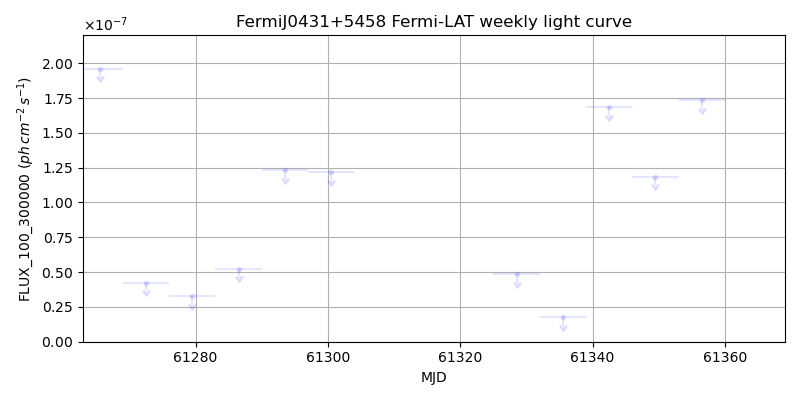
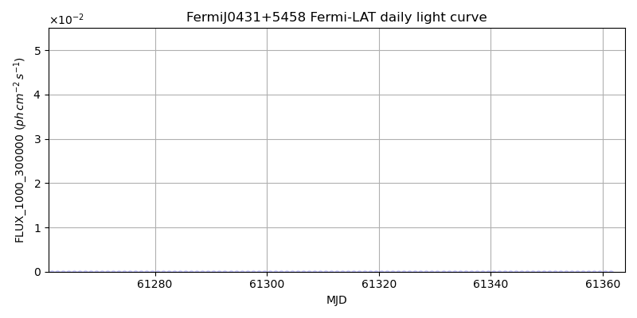

LAT Lightcurve site: https://fermi.gsfc.nasa.gov/ssc/data/access/lat/msl_lc/source/Fermi_J0431p5458
NED: Query
Time of last update of this page: UT: 2026-11-20 16:14 (MJD: 61364.677)
| Property | Value |
|---|---|
| R.A. | 4:31:26.40 |
| Dec. | 54:58:48.0 |
| z | 0.000 |
| 3FGL SpectrumType | |
| 3FGL PL Index | -1.00 |
| 3FGL Flux_100_300000 | -1.00e+00 |
| 3FGL Flux_1000_300000 | -1.00e+00 |
| 3FGL Flux >200 GeV | -1.00e+00 |
| 3FGL Extrap. Crab >200 GeV | -1.00 |
| 3FGL Flux After EBL Absorption >200GeV | -1.00e+00 |
| 3FGL EBL Crab Fraction >200GeV | -1.00 |
| MJD | dMJD | Flux | dFlux | Frac3FGL | FracCrab>200GeV | EBLFracCrab>200GeV |
|---|---|---|---|---|---|---|
| 61357.50 | 0.50 | 2.36e-07 | 0.00e+00 | 0.00 | 0.00 | -0.00 |
| 61358.50 | 0.50 | 5.07e-07 | 0.00e+00 | 0.00 | 0.00 | -0.00 |
| 61359.50 | 0.50 | 5.29e-07 | 0.00e+00 | 0.00 | 0.00 | -0.00 |
| 61360.50 | 0.50 | 5.77e-07 | 0.00e+00 | 0.00 | 0.00 | -0.00 |
| 61361.50 | 0.50 | 3.34e-07 | 0.00e+00 | 0.00 | 0.00 | -0.00 |

| MJD | dMJD | Flux | dFlux | Frac3FGL | FracCrab>200GeV | EBLFracCrab>200GeV |
|---|---|---|---|---|---|---|
| 61328.50 | 3.50 | 4.84e-08 | 0.00e+00 | 0.00 | 0.00 | -0.00 |
| 61335.50 | 3.50 | 1.75e-08 | 0.00e+00 | 0.00 | 0.00 | -0.00 |
| 61342.50 | 3.50 | 1.69e-07 | 0.00e+00 | 0.00 | 0.00 | -0.00 |
| 61349.50 | 3.50 | 1.18e-07 | 0.00e+00 | 0.00 | 0.00 | -0.00 |
| 61356.50 | 3.50 | 1.74e-07 | 0.00e+00 | 0.00 | 0.00 | -0.00 |

| MJD | dMJD | Flux | dFlux | Frac3FGL | FracCrab>200GeV | EBLFracCrab>200GeV |
|---|---|---|---|---|---|---|
| 61357.50 | 0.50 | 2.91e-08 | 0.00e+00 | 0.00 | 0.00 | -0.00 |
| 61358.50 | 0.50 | 2.88e-08 | 0.00e+00 | 0.00 | 0.00 | -0.00 |
| 61359.50 | 0.50 | 2.77e-08 | 0.00e+00 | 0.00 | 0.00 | -0.00 |
| 61360.50 | 0.50 | 1.94e-08 | 0.00e+00 | 0.00 | 0.00 | -0.00 |
| 61361.50 | 0.50 | 2.39e-08 | 0.00e+00 | 0.00 | 0.00 | -0.00 |

| MJD | dMJD | Flux | dFlux | Frac3FGL | FracCrab>200GeV | EBLFracCrab>200GeV |
|---|---|---|---|---|---|---|
| 61328.50 | 3.50 | 8.23e-09 | 0.00e+00 | 0.00 | 0.00 | -0.00 |
| 61335.50 | 3.50 | 4.99e-09 | 0.00e+00 | 0.00 | 0.00 | -0.00 |
| 61342.50 | 3.50 | 1.22e-08 | 0.00e+00 | 0.00 | 0.00 | -0.00 |
| 61349.50 | 3.50 | 8.56e-09 | 0.00e+00 | 0.00 | 0.00 | -0.00 |
| 61356.50 | 3.50 | 6.10e-09 | 0.00e+00 | 0.00 | 0.00 | -0.00 |
--------------------------------------------------------- Using user-supplied coords: 4:31:26.40 54:58:48.0 2000 --------------------------------------------------------- FLWO UT night of: 2026-11-21 Local Sid. @ Midnight: 03:37 Sunset (-15.0) (local, UT): 18:33 01:33 Sunrise (-15.0) (local, UT): 05:47 12:47 Moonrise (local, UT): Moonset (local, UT): 03:40 10:40 Moon phase: 0.85 --------------------------------------------------------- AzTime LSID UT Obj_el Obj_az Mn_el Mn_az Sep. --------------------------------------------------------- 18:33 22:09 01:33 22.3 38.0 47.9 117.4 66.8 19:03 22:39 02:03 26.3 39.7 53.3 125.0 66.6 19:33 23:09 02:33 30.4 41.0 58.2 134.7 66.4 20:03 23:39 03:03 34.6 41.9 62.3 146.9 66.2 20:33 00:09 03:33 38.9 42.3 65.1 162.1 66.0 21:03 00:39 04:03 43.2 42.1 66.3 179.7 65.8 21:33 01:09 04:33 47.5 41.2 65.4 197.5 65.6 22:03 01:39 05:03 51.6 39.5 62.9 213.2 65.4 22:33 02:09 05:33 55.6 36.6 59.0 225.9 65.2 23:03 02:39 06:03 59.2 32.2 54.2 235.9 65.0 23:33 03:09 06:33 62.4 26.2 48.9 243.9 64.8 00:03 03:39 07:03 64.8 18.2 43.2 250.4 64.6 00:33 04:10 07:33 66.3 8.4 37.3 255.9 64.4 01:03 04:40 08:03 66.6 357.7 31.2 260.7 64.2 01:33 05:10 08:33 65.8 347.2 25.1 265.1 64.0 02:03 05:40 09:03 63.8 338.1 19.0 269.2 63.8 02:33 06:10 09:33 61.1 331.0 12.9 273.0 63.6 03:03 06:40 10:03 57.7 325.7 6.8 276.9 63.4 03:33 07:10 10:33 53.9 322.0 1.0 280.7 63.2 04:03 07:40 11:03 49.9 319.7 -4.9 284.7 62.9 04:33 08:10 11:33 45.7 318.3 -11.1 288.8 62.7 05:03 08:40 12:03 41.4 317.7 -16.8 293.2 62.4 05:33 09:10 12:33 37.1 317.8 -22.3 298.1 62.2 05:47 09:25 12:47 35.0 318.0 -24.8 300.5 62.0 --------------------------------------------------------- Dark hours >55 deg.: 0.00